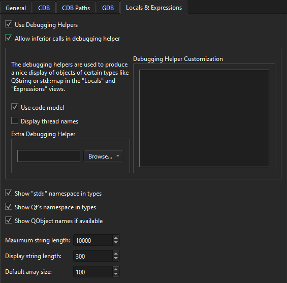

Inspect basic Qt objects
The most powerful feature of the debugger is that the Locals and Expressions views show the data that belongs to Qt's basic objects. For example, in case of QObject, instead of a pointer to some private data structure, you see a list of children, signals, and slots.
Similarly, instead of displaying many pointers and integers, Qt Creator's debugger displays the contents of a QHash or QMap in an orderly manner. Also, the debugger shows access data for QFileInfo and the real contents of QVariant.
Change value display format
In the Locals or the Expressions view, select Change Value Display Format in the context menu to change the value display format. The available options depend on the type of the current items, and are provided by debugging helpers.
To force a plain C-like display of structures, go to Preferences > Debugger > Locals & Expressions, and then clear Use Debugging Helpers.

This still uses the Python scripts, but generates more basic output. To force the plain display for a single object or for all objects of a given type, select Change Value Display Format > Raw in the context menu of the Locals or Expressions view.
Typically, you can change the encoding for string-like data, such as QByteArray and std::string, or show the data in a full editor window.
You can select a compact option for map-like data, such as QMap, QHash, and std::map, that uses the Name column for keys and results in a concise display of containers with short keys, such as numbers or short strings. For example, to expand all the values of QMap, select Change Value Display Format > Compact.
For strings, you can select Change Value Display Format > Separate Window to see string content inside a text edit instead of a single line item in the view. For QPixmap, you can see the pixmap being created pixel-by-pixel when stepping through the code.
Change variable values
You can use the Locals and Expressions view to change the contents of variables of simple data types, for example, int, float, QString and std::string when the application is interrupted. To do so, select the Value column, modify the value with the inplace editor, and select Enter.
To change the complete contents of QVector or std::vector values, type all values separated by commas into the Value column of the main entry. However, Qt Creator does not try to reallocate memory for variables, so it applies the changes only if the new content fits into the old memory and if the debugger supports changing values.
Signal-slot connections
If an instance of a class is derived from QObject, you can find all other objects connected to this object's slots with Qt's signals and slots mechanism. Go to Preferences > Debugger > Locals & Expressions > Use Debugging Helpers.
In the Locals view, expand the object's entry and open the slot in the slots subitem. The view shows the objects connected to this slot as children of the slot. Similarly, you can show the children of signals.
Low-level data
If you cannot debug Qt objects because their data is corrupted, you can switch off the debugging helpers to make low-level structures visible.
To switch off the debugging helpers, clear Use Debugging Helpers in Preferences > Debugger > Locals & Expressions.
See also How To: Debug, Debugging, Debuggers, and Debugger.